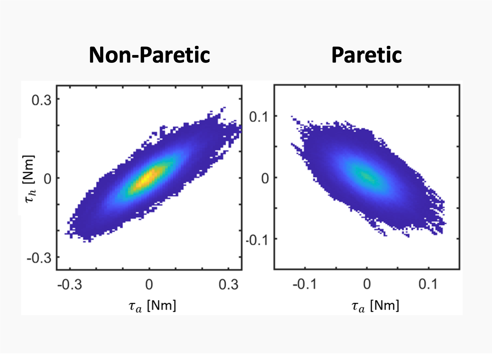
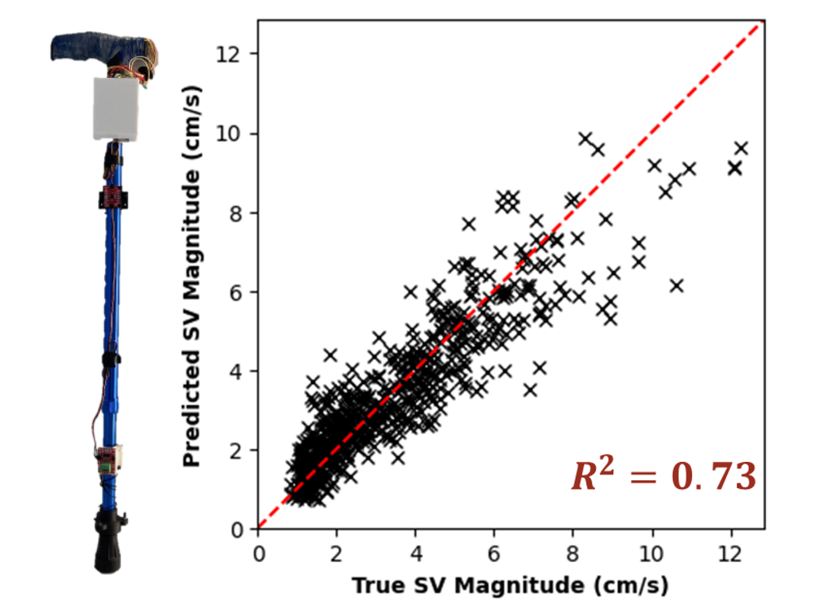
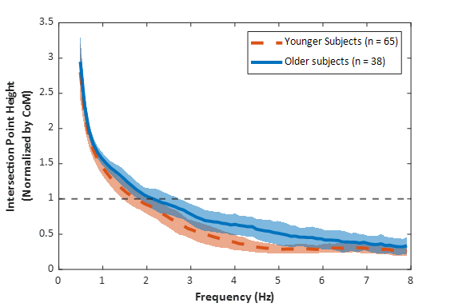
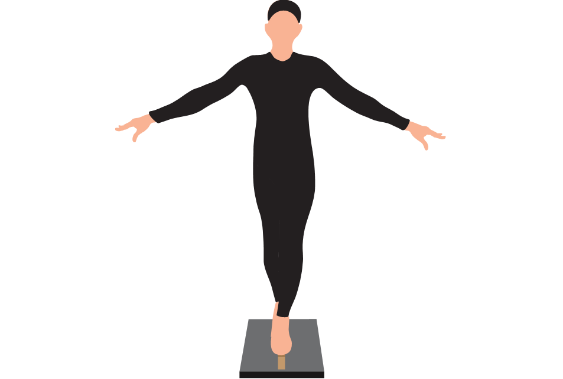
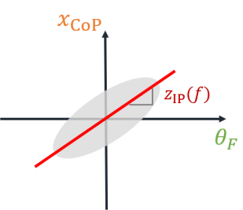
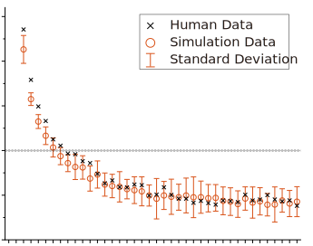

*Corresponding author
2025

Kaymie Shiozawa*, Rika Sugimoto-Dimitrova, Kreg G. Gruben, and Neville Hogan
Under review

Max Burns, Kaymie Shiozawa*, and Neville Hogan
2025 International Conference On Rehabilitation Robotics (ICORR)
2024

Kaymie Shiozawa*, Rika Sugimoto Dimitrova, Kreg G. Gruben, and Neville Hogan
Journal of Neurophysiology

Kaymie Shiozawa, Marta Russo*, Jongwoo Lee, Neville Hogan, and Dagmar Sternad
Journal of Neurophysiology

Rika Sugimoto Dimitrova*, Kaymie Shiozawa, Kreg G. Gruben, and Neville Hogan
Journal of Neurophysiology
2021

Kaymie Shiozawa, Jongwoo Lee*, Marta Russo, Dagmar Sternad, and Neville Hogan
Journal of NeuroEngineering and Rehabilitation